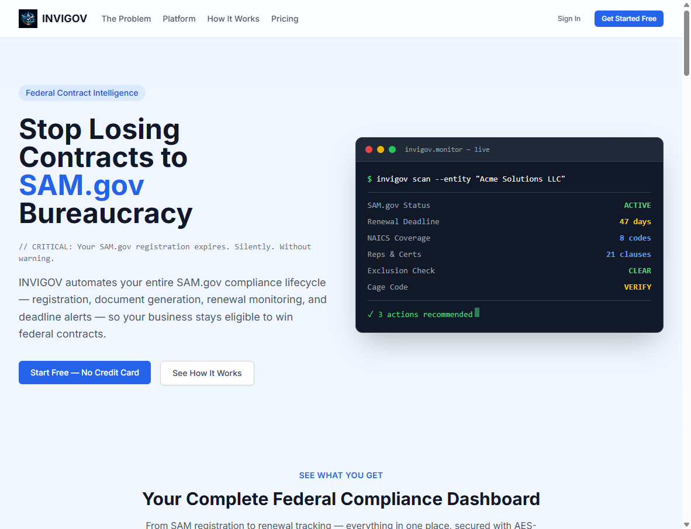
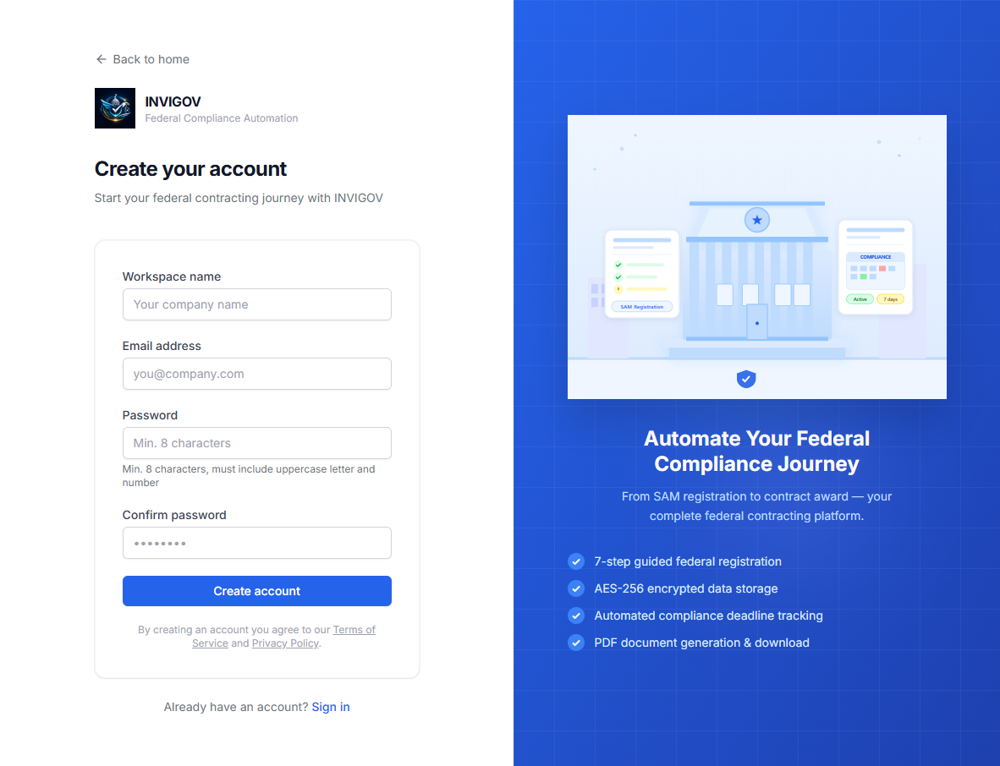
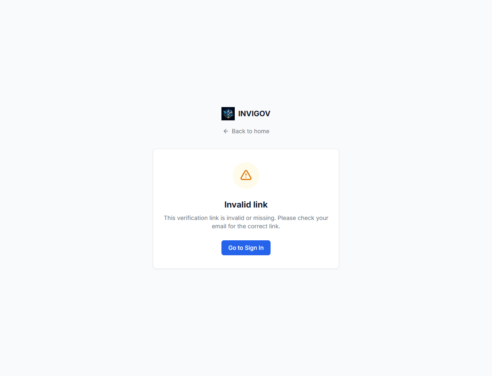
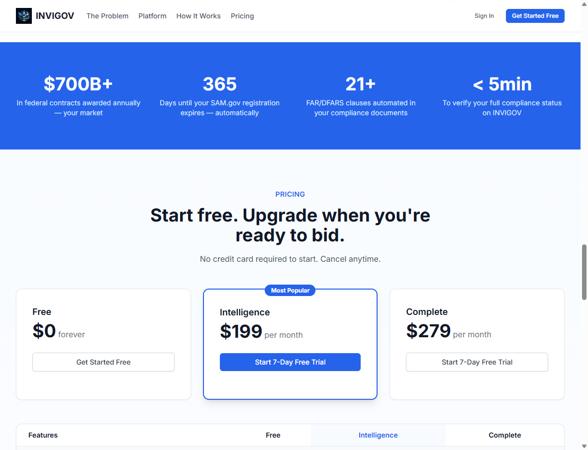
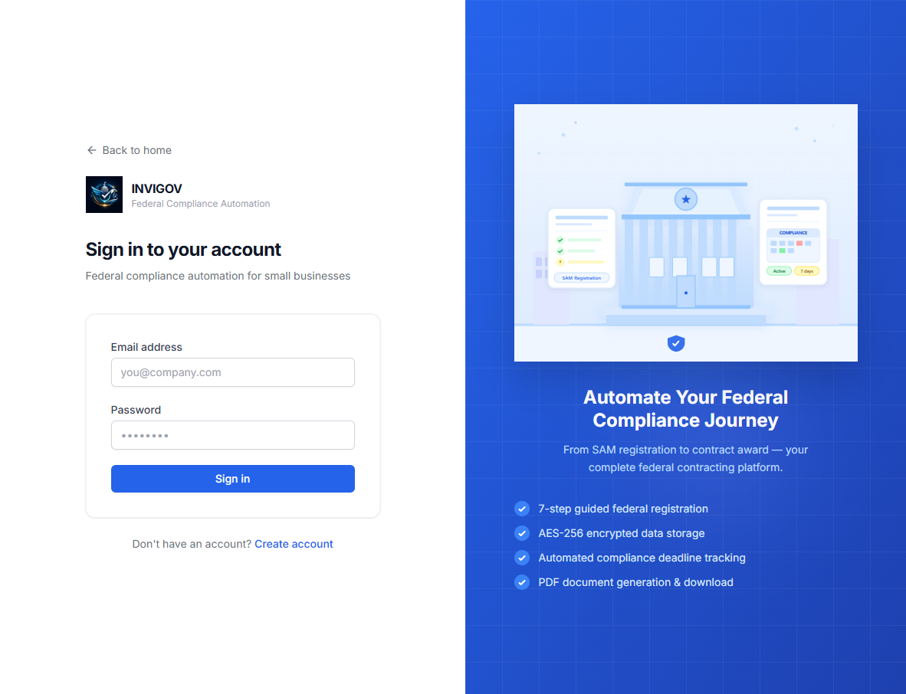
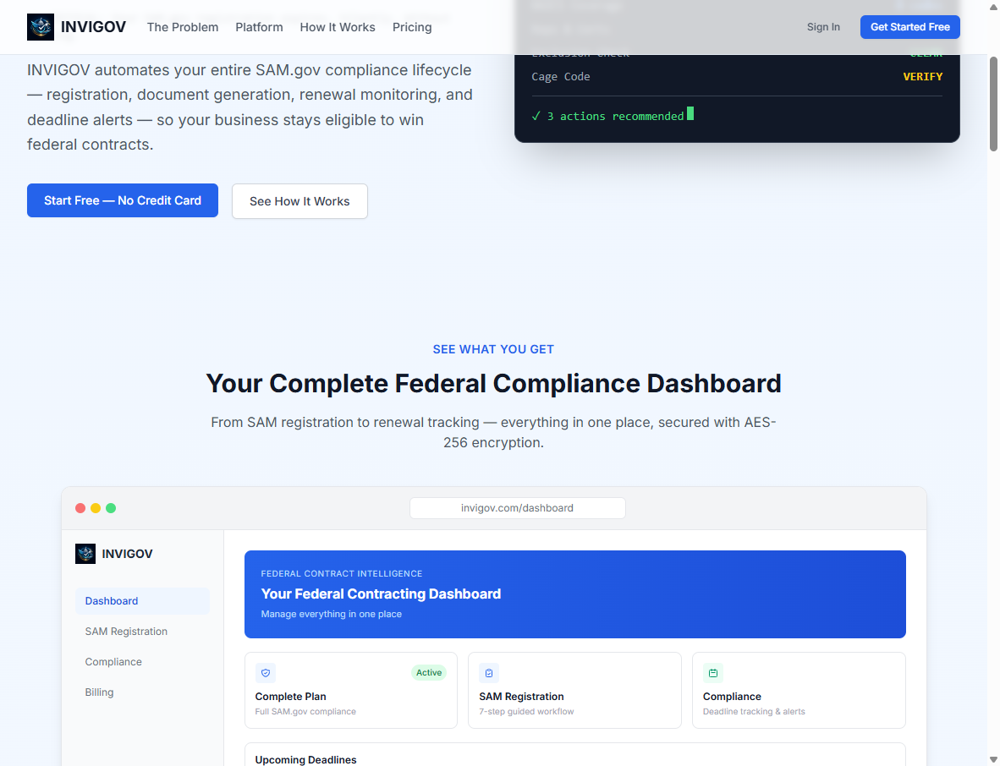

INVIGOV live end-to-end pass
1. Scorecard
| Stage | Result | Evidence | If fail: layer | Fix estimate |
|---|---|---|---|---|
| 0. Site loads | Pass | Homepage 200. API health {"db":"ok","redis":"ok","r2":"ok"} |
— | — |
| 1. Sign up | UI pass / not submitted | Register page live at /register. Account was not created on production. | Would be API or database if Create account fails | Hours–1 day |
| 2. Verify email | Blocked | Verify page exists. Needs a real inbox and a registration email. | Email (Resend / DNS) if no message arrives | Hours–2 days |
| 3. Pay Complete | Blocked | Pricing live: Complete $279/mo. Stripe Checkout not run (no live card). | Billing keys if Checkout never opens; webhook if paid but still locked | Hours–1 day |
| 4. Workflow unlocks | Gate works / paid unlock untested | /dashboard/workflow redirects to login when logged out. Paid unlock not tested. | Webhook + database if paid users stay locked | Hours–1 day |
| 5. All 7 SAM steps | Blocked | Requires Complete plan. Logged-out users cannot enter the wizard. | API / database / encryption if steps fail to save | 1–2 days |
| 6. Generate document | Blocked | Requires completed workflow. Storage layer (R2) is healthy on /api/v1/health. | API + R2 if generate/download fails | 1–2 days |
2. Stage screenshots
Stage 0 — Site loads Pass
Live homepage at www.invigov.com. HTTPS, branding, Sign In, and Get Started are present.

Figure 0. Live homepage, 30 Sep 2026.
GET https://www.invigov.com/api/v1/health returned
HTTP 200 {"db":"ok","redis":"ok","r2":"ok"}. Hosting, database, Redis, and R2 are up.
No uptime monitor was confirmed (no dashboard access).
Stage 1 — Sign up UI pass / not submitted
Register form is live: workspace name, email, password (8+ chars, uppercase + number), confirm password, Terms/Privacy.

Figure 1. https://www.invigov.com/register — form not submitted (would create a production user).
Stage 2 — Verify email Blocked
Login exists. The verify-email route exists but, without a token from a real email, shows “Invalid link”. That is expected.

Figure 2a. https://www.invigov.com/login

Figure 2b. https://www.invigov.com/verify-email with no token — expected invalid-link state.
Stage 3 — Pay Complete Blocked
Public pricing is live. Complete plan is $279/month and is required for the 7-step SAM workflow and PDF generation. Live card was not charged.

Figure 3. Public pricing on the live homepage. Stripe Checkout was not opened.
If card charges but workflow stays locked: missing layer is the Stripe webhook (API + Stripe dashboard). Estimate: hours–1 day.
Stage 4 — Workflow unlocks Gate works / paid unlock untested
Visiting /dashboard/workflow while logged out redirects to login. Access control is working at the UI layer. Paid unlock after Complete checkout is untested.

Figure 4. https://www.invigov.com/dashboard/workflow → /login (unauthenticated).
Stages 5–6 — Seven SAM steps and document generation Blocked
These screens require a Complete-tier session. They were not reached. The 7 steps in product code are: 1 Business Info, 2 NAICS, 3 Banking, 4 Reps & Certs, 5 Review, 6 Preflight, 7 Complete → Generate documents (SAM checklist, FAR/DFARS reps & certs, banking authorization).

Figure 5–6. Marketing mock on the homepage only — not a completed live workflow. Replace with wizard + PDF screenshots after paid login.
3. Stability items (roadmap)
| Item | Finding | Status |
|---|---|---|
| Uptime monitoring | Health endpoint is live and currently green (db / redis / r2). No evidence yet that UptimeRobot or similar is pinging it. | Partial — monitor not confirmed |
| Backups | Not documented in the runbook. Need Postgres + R2 backup/restore proof from the host dashboard. | Unconfirmed |
| Access control | Logged-out users cannot open /dashboard/workflow. JWT + server-side plan gates exist in code. Who has GitHub / server / Stripe / Namecheap is unknown. | Product gate: pass. Human access: unconfirmed |
| SAM.gov credentials | The product does not collect or store SAM.gov or Login.gov passwords. Users are told to create those accounts themselves. | Not stored |
| UEI / sensitive data | EIN and bank routing/account: AES-256-GCM (last 4 shown). UEI and CAGE: stored as plaintext. Invigov password: bcrypt. | Confirmed in code; production key not inspected |
4. What is still needed to close this report
- Client approval to charge a live Complete-plan card ($279/mo) — or a screen share so they enter the card.
- A real inbox to complete email verification.
- Screenshots of: verification success, Stripe Checkout, billing success, all 7 wizard steps, generated PDF download.
- Hosting logins (Namecheap, server/Vercel, Stripe) to confirm backups and uptime monitors.
Until those four items, stages 2–6 cannot be marked Pass or Fail for a full live payment path.